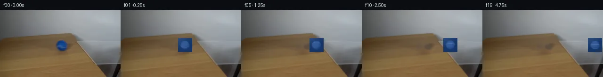

![首帧]()

Round 00
2026-11-05T09:17:29.580602+00:00像素候选变化代码 +192/−0inspection 更新
pixels 709b7a246a81a44c · code bbc25f8232b9e274
查看本轮 generate.py 真实 diff
--- previous/generate.py
+++ current/generate.py
@@ -0,0 +1,192 @@
+"""PixelWorld case_0025 generator.
+
+Scene (see OBSERVATION.md): a blue tennis ball rolls right across a light wood
+table and onto a clear glass sheet cantilevered over the table edge.
+
+Local pixel operations only:
+ * static background = first_frame with the frame-0 ball footprint inpainted
+ once (cv2 Telea on a 2x upscale);
+ * per-frame analytic ball sprite (4x supersampled radial-shaded sphere with
+ two rotating tennis-seam arcs + slight horizontal motion-blur fringe);
+ * soft contact shadow, stronger on wood, weaker over the glass;
+ * pure horizontal translation at constant screen height (flat glass lies in
+ the table plane), rolling-without-slipping seam rotation.
+
+Frame 00 is an exact copy of first_frame.png.
+"""
+from pathlib import Path
+import numpy as np
+import cv2
+from PIL import Image
+
+import artifact_io
+
+HERE = Path(__file__).parent
+
+# ---- measured scene constants (see OBSERVATION.md) -------------------------
+W, H = 256, 144
+CY = 75.0 # ball centre row, constant
+CX0 = 131.0 # frame-0 centre column
+SPEED = 5.7 # px / frame (4 fps -> 22.8 px/s)
+R = 10.2 # sprite radius, px
+TILE = 30 # sprite tile size, px (final res)
+SS = 4 # supersampling factor
+GLASS_ENTRY_X = 179.0 # contact point crosses glass near edge around here
+
+FIRST = np.asarray(Image.open(HERE / "first_frame.png").convert("RGB"))
+assert FIRST.shape == (H, W, 3)
+
+
+# --------------------------------------------------------------------------- #
+# Background: inpaint the frame-0 ball + its contact shadow once.
+# --------------------------------------------------------------------------- #
+def build_background():
+ r = FIRST[..., 0].astype(np.int16)
+ g = FIRST[..., 1].astype(np.int16)
+ b = FIRST[..., 2].astype(np.int16)
+
+ blue = ((b - r) > 28) & (b > 88) & (b > g + 8)
+ blue[:60, :] = False
+ blue[92:, :] = False
+ blue[:, :110] = False
+ blue[:, 150:] = False
+
+ mask = (blue * 255).astype(np.uint8)
+ # contact-shadow ellipse under/right of the ball
+ sh = np.zeros_like(mask)
+ cv2.ellipse(sh, (134, 85), (14, 5), 0, 0, 360, 255, -1)
+ mask = cv2.bitwise_or(mask, sh)
+ # soft fringe margin
+ mask = cv2.dilate(mask, np.ones((5, 5), np.uint8), iterations=1)
+
+ big = cv2.resize(FIRST, (W * 2, H * 2), interpolation=cv2.INTER_LINEAR)
+ m2 = cv2.resize(mask, (W * 2, H * 2), interpolation=cv2.INTER_NEAREST)
+ out = cv2.inpaint(big, m2, 5, cv2.INPAINT_TELEA)
+ bg = cv2.resize(out, (W, H), interpolation=cv2.INTER_LINEAR)
+ return bg, mask
+
+
+# --------------------------------------------------------------------------- #
+# Ball sprite: 4x supersampled shaded sphere + rotating seams, then LANCZOS.
+# --------------------------------------------------------------------------- #
+def render_sprite(theta, frac_x=0.0):
+ """Return premultiplied RGBA TILE x TILE float sprite, centre (15,15)."""
+ s = TILE * SS
+ c = s / 2.0 + frac_x * SS # subpixel horizontal placement
+ yy, xx = np.mgrid[0:s, 0:s].astype(np.float32)
+ dx = (xx - c) / SS
+ dy = (yy - s / 2.0) / SS
+ d2 = dx * dx + dy * dy
+ inside = d2 <= R * R
+ z = np.zeros_like(dx)
+ z[inside] = np.sqrt(R * R - d2[inside])
+ nx, ny, nz = dx / R, dy / R, z / R
+
+ # key light from upper-left-front; fill ambient keeps the rim blue
+ lx, ly, lz = -0.28, -0.40, 0.87
+ diff = np.clip(nx * lx + ny * ly + nz * lz, 0.0, 1.0)
… diff truncated; 105 more lines …